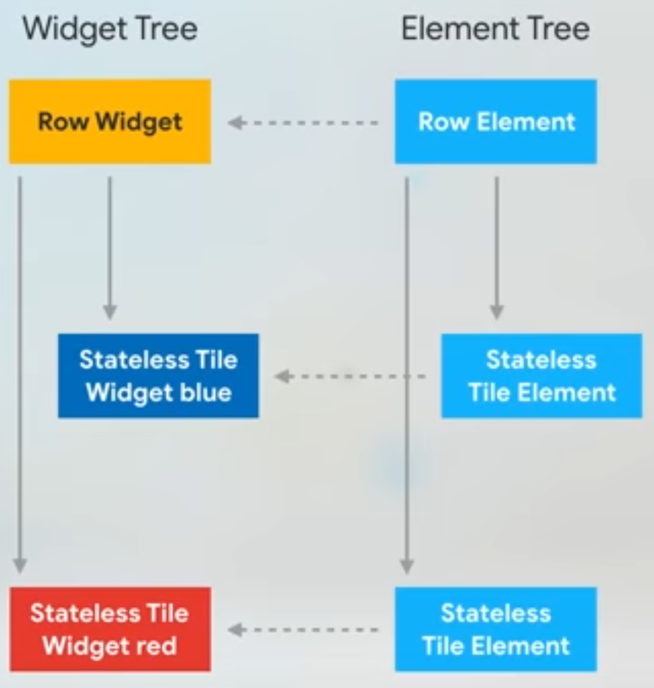

Flutter中的Key和GlobalKey
Contents
1.Key
参考：https://api.flutter.dev/flutter/widgets/Widget/key.html
控制一个widget该如何替换掉树中的另一个widget：如果两个widget的runtimeType 和 key都相等（==），那么会让旧widget所对应的旧element转而指向新widget（即调用element.update）；否则，旧element会被从树中移除，然后根据新widget来生成一个新element，并将该新element插入到树中。
Key的用途
参考：https://api.flutter.dev/flutter/foundation/Key-class.html
大多数时候并不需要使用key。
当需要在一个StatefulWidget集合中进行添加、删除、重排序等操作时，才是key登场的时候。
无状态组件
下面这段代码在一个Row中展示了两个彩色方片（StatelessColorfulTile），当点击按钮时，会交换两个方片的位置：
|
|
基础知识
Widget其实并不是表示最终绘制在设备屏幕上的显示元素，而只是显示元素的一个配置数据。Flutter中真正代表屏幕上显示元素的是Element。
element树决定了页面最终展示到屏幕上的样子。但element树中只存储节点的类型，更具体的信息需要去widget树中查找。每个element会通过引用指向其对应的widget。

当交换两个widget的位置（并调用父组件PositionedTiles的setState方法）后，flutter会从上到下逐一对比widget树和element树中的每个节点，如果左右节点的类型和key一致的话（这里没有key，因此只对比类型），那么就认为该element仍然是有效的，可用复用，于是直接让element指向左边对应位置的widget——这种element的复用提高了渲染效率。而由于无状态widget的颜色信息是存储在widget中的，因此只要交换widget，无需改变element，实际显示到屏幕上就是成功交换的效果。
简言之：只要节点的类型和key一样，那么element就会被复用。
有状态组件
有状态组件的状态信息（如颜色）通常是存储在state中的，而state是存储在element树中的。
当交换两个widget的位置（并调用父组件PositionedTiles的setState方法）后，与前面一样，flutter会从上到下逐一对比widget树和element树中的每个节点，如果左右节点的类型和key一致的话（这里没有key，因此只对比类型），那么就认为该element仍然是有效的，可用复用，于是直接让element指向左边对应位置的widget。
但与之前不同的是，因为颜色信息存储在element树中，因此element树被复用的结果就是显示效果也不会有任何变化——仍然是widget未交换时的效果。
解决办法1：给widget指定key，如下图所示。因为key不相同，因此右边的element就不会被直接复用。flutter会在右边的element树中查找与widget类型和key都相同的element，如果找到，就会移动该element并让该element指向左边的widget，如果没有找到，则会根据widget信息创建新的element。
为了避免混淆，有必要说明一下：如果改变图中小方片（Stateful Tile）的State中的颜色，并调用小方片的setState方法的话，那么改变是可以生效的，因为是直接改变了小方片的State对象。这和上面说的改变父组件PositionedTiles的State并调用其setState是不同的情形，PositionedTiles的State就是小方片的List，setState的结果就是widget树中两个小方片的位置变了，但是因为上面所述的原因，如果不给每个小方片widget指定key的话，最后的显示效果不会改变。
解决办法2，覆写State的didUpdateWidget方法，当widget的配置发生变化时，手动更新state，例如：
|
|
Key的种类
- ValueKey:以一个值为key。
- ObjectKey:以一个对象为key。
- UniqueKey:生成唯一的随机数作为key。
- PageStorageKey:专用于存储页面滚动位置的key。
- GlobalKey:见下一节。
2.GlobalKey
参考：https://api.flutter.dev/flutter/widgets/GlobalKey-class.html
每个globalkey都是一个在整个应用内唯一的key。
globalkey相对而言是比较昂贵的，如果你并不需要globalkey的某些特性，那么可以考虑使用Key、ValueKey、ObjectKey或UniqueKey。
用途1
允许widget在应用程序中的任何位置更改其parent而不丢失其状态。应用场景：在两个不同的屏幕上显示相同的widget，并保持状态相同。
用途2
globalkey唯一定义了某个element，它使你能够访问与element相关联的其他对象，例如buildContext、state等。应用场景：跨widget访问状态：
|
|
在SwitcherWidget的State中有一个changeState()方法。在SwitcherWidget组件的外部，可以通过key.currentState拿到它的状态对象，然后就可以调用其中的changeState()方法。